Metodos para encontrar Raices
Comenzaremos a analizar uno de los problemas mas basicos del analisis numerico: el problema de busqueda de raices. El problema consiste en encontrar los valores de la variable x que satisfacen la ecuacion f(x) = 0, para una funcion f dada.
Primer metodo
- Punto Fijo.
Segundo Metodo
- Biseccion.
Tercer Metodo
- Falsa Posicion.
Cuarto Metodo
- de Newton Raphson.
1. Punto Fijo
El método del punto fijo es un método abierto, también llamado de iteración de un punto o sustitución sucesiva, que reordena la ecuación.
f(x)=0
De la forma en que x esté del lado izquierdo de la ecuación, para buscarla intersección entre la recta identidad y la curva g(x), como se muestran en los siguientes ejemplos.
y = x
x=g(x)
De la forma en que x esté del lado izquierdo de la ecuación, para buscarla intersección entre la recta identidad y la curva g(x), como se muestran en los siguientes ejemplos.
y = x
x=g(x)
La raiz de f(x) se encuentra en el mismo valor de x donde ocurre la intersección entre la recta identidad en color verde y la función g(x) en color naranja. Se usa la linea vertical en color morado en x=raiz como referencia de lo indicado.
La raiz de f(x) se encuentra en el mismo valor de x donde ocurre la intersección entre la recta identidad en color verde y la función g(x) en color naranja. Se usa la linea vertical en color morado en x=raiz como referencia de lo indicado.
El método consiste en establecer un punto inicia x0 para la búsqueda, que se usa para calcular el valor g(x0).
En la siguiente iteración el nuevo valor para x es g(x0), que se refleja en la recta identidad y nuevamente se usa para calcular g(x).
El resultado iterativo se muestra en la figura animada, donde se observa que el resultado es convergente.
El método consiste en establecer un punto inicia x0 para la búsqueda, que se usa para calcular el valor g(x0).
En la siguiente iteración el nuevo valor para x es g(x0), que se refleja en la recta identidad y nuevamente se usa para calcular g(x).
El resultado iterativo se muestra en la figura animada, donde se observa que el resultado es convergente.
2. Biseccion
El método se basa en el teorema del valor intermedio, conocido como método de la bisección, búsqueda binaria, partición de intervalos o de Bolzano.
Es un tipo de búsqueda incremental en el que:
-El intervalo se divide siempre en la mitad.
-Si la función cambia de signo sobre un intervalo, se evalúa el valor de la función en el punto medio.
-La posición de la raíz se determina en el punto medio del sub-intervalo, izquierdo o derecho, dentro del cual ocurre un cambio de signo.
-El proceso se repite hasta obtener una mejor aproximación
-El intervalo se divide siempre en la mitad.
-Si la función cambia de signo sobre un intervalo, se evalúa el valor de la función en el punto medio.
-La posición de la raíz se determina en el punto medio del sub-intervalo, izquierdo o derecho, dentro del cual ocurre un cambio de signo.
-El proceso se repite hasta obtener una mejor aproximación
Observamos la gráfica para una sola iteración y asi describir mejor el método.
Para la primera iteración se tiene como procedimiento que la función tiene un cambio de signo en el intervalo [a,b].
En intervalo se divide en la mitad, representado por el punto c, obteniendo el sub-intervalo izquierdo [a,c] o sub-intervalo derecho [c,b].
El sub-intervalo que contiene la función con un cambio de signo, se convierte en el nuevo intervalo a ser analizado en la siguiente iteración
Observamos la gráfica para una sola iteración y asi describir mejor el método.
Para la primera iteración se tiene como procedimiento que la función tiene un cambio de signo en el intervalo [a,b].
En intervalo se divide en la mitad, representado por el punto c, obteniendo el sub-intervalo izquierdo [a,c] o sub-intervalo derecho [c,b].
El sub-intervalo que contiene la función con un cambio de signo, se convierte en el nuevo intervalo a ser analizado en la siguiente iteración
Cota de Error
Suponga que f ∈ C[a,b] y f(a)*f(b)<'0, f es una función en el intervalo [a,b] y que presenta un cambio de signo.
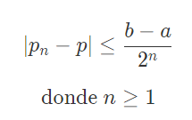
la desigualdad implica que pn converge a p con una razón de convergencia de orden
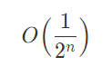
es decir:
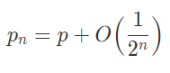
Cota de Error
Suponga que f ∈ C[a,b] y f(a)*f(b)<'0, f es una función en el intervalo [a,b] y que presenta un cambio de signo.
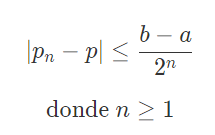la desigualdad implica que pn converge a p con una razón de convergencia de orden
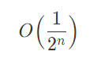es decir:
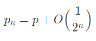===========================================================
cantidad de iteraciones
Para la ecuacion:
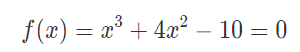
Se busca encontrar un entero n que satisface la ecuación:
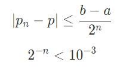
Usando logaritmos:
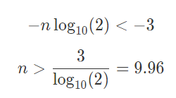
En consecuencia se requieren unas diez iteraciones para lograr la aproximación de 10^-3. Verifique los resultados con los valores calculados.
cantidad de iteraciones
Para la ecuacion:
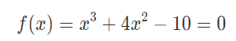Se busca encontrar un entero n que satisface la ecuación:
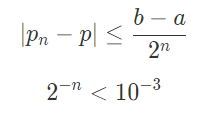Usando logaritmos:
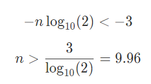En consecuencia se requieren unas diez iteraciones para lograr la aproximación de 10^-3. Verifique los resultados con los valores calculados.
3. Falsa Posicion
El método de la posición falsa, falsa posición, regla falsa o regula falsi considera dividir el intervalo cerrado [a,b] donde se encontraría una raíz de la función f(x) basado en la cercanía a cero que tenga f(a) o f(b).
El método une f(a) con f(b) con una línea recta, la intersección de la recta con el eje x representaría una mejor aproximación hacia la raiz.
El método une f(a) con f(b) con una línea recta, la intersección de la recta con el eje x representaría una mejor aproximación hacia la raiz.
Al reemplazar la curva de f(x) por una línea recta, se genera el nombre de «posición falsa» de la raíz. El método también se conoce como interpolación lineal.
A partir de la gráfica, usando triángulos semejantes, considerando que f(a) es negativo en el ejemplo, se estima que:

que al despejar c, se obtiene:
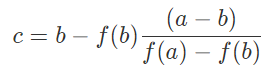
Calculado el valor de c, éste reemplaza a uno de los valores iniciales [a,b], cuyo valor evaluado tenga el mismo signo que f(c)
Al reemplazar la curva de f(x) por una línea recta, se genera el nombre de «posición falsa» de la raíz. El método también se conoce como interpolación lineal.
A partir de la gráfica, usando triángulos semejantes, considerando que f(a) es negativo en el ejemplo, se estima que:
que al despejar c, se obtiene:
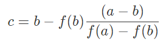Calculado el valor de c, éste reemplaza a uno de los valores iniciales [a,b], cuyo valor evaluado tenga el mismo signo que f(c)
Control de iteraciones
Las correcciones del intervalo que se realizan en cada iteración tienen a ser más pequeñas, por lo que el control de iteraciones se realizan sobre la porción o tramo que se redujo el intervalo.
Si la redución del intervalo es por la izquierda, tramo = c – a
Si la redución del intervalo es por la derecha, tramo = b – c
Control de iteraciones
Las correcciones del intervalo que se realizan en cada iteración tienen a ser más pequeñas, por lo que el control de iteraciones se realizan sobre la porción o tramo que se redujo el intervalo.
Si la redución del intervalo es por la izquierda, tramo = c – a
Si la redución del intervalo es por la derecha, tramo = b – c
Ecuacion con la cual se puede ir calculando cada iteracion
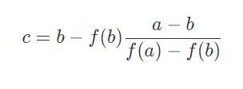4. Newton Raphson
Se deduce a partir de la interpretación gráfica o por medio del uso de la serie de Taylor.
De la gráfica, se usa el triángulo formado por la recta tangente que pasa por f(xi), con pendiente f'(xi) y el eje x.
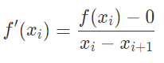
De la gráfica, se usa el triángulo formado por la recta tangente que pasa por f(xi), con pendiente f'(xi) y el eje x.
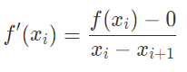
El punto xi+1 es la intersección de la recta tangente con el eje x, que es más cercano a la raíz de f(x), valor que es usado para la próxima iteración.
Reordenando la ecuación de determina la fórmula para el siguiente punto:
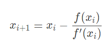
El punto xi+1 es la intersección de la recta tangente con el eje x, que es más cercano a la raíz de f(x), valor que es usado para la próxima iteración.
Reordenando la ecuación de determina la fórmula para el siguiente punto:
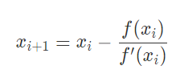
El error se determina como la diferencia entre los valores sucesivos encontrados |x(i+1) – xi|
La gráfica animada muestra el proceso aplicado varias veces sobre f(x) para encontrar la raiz.
El error se determina como la diferencia entre los valores sucesivos encontrados |x(i+1) – xi|
La gráfica animada muestra el proceso aplicado varias veces sobre f(x) para encontrar la raiz.